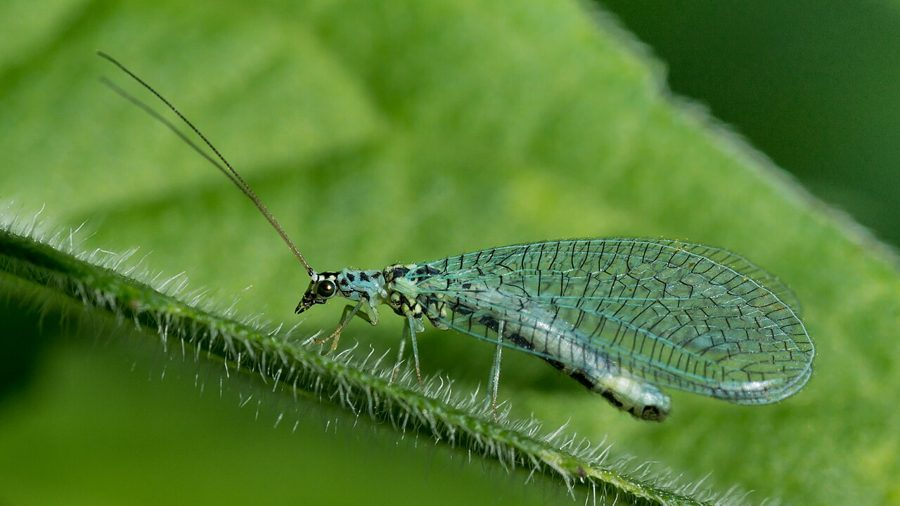

हरी लेसविंगGreen Lacewing
Chrysoperla zastrowi · Chrysopidae · INS-0062

- Scientific nameवैज्ञानिक नाम
- Chrysoperla zastrowi Esben-Petersen, 1915
- Familyकुल
- Chrysopidae
- Hindiहिंदी
- हरी लेसविंग
- Local namesस्थानीय नाम
- hari lacewing, lacewing, chrysopa, hari jaalidar makkhi
- Status hereयहाँ की स्थिति
- native
- Movementआवागमन
- Resident, here all year
- IUCNIUCN
- not evaluated
- Reviewसमीक्षा
- audited and independently read
When to look कब देखें
Present all year.साल भर मौजूद।
Uses and possibilities उपयोग और संभावनाएँ
Drawn from the documented uses in the profile below, where each is labelled traditional, current or a research lead. All uses →
हरी लेसविंग / Green Lacewing
Chrysoperla zastrowi Esben-Petersen, 1915 — Chrysopidae
हरी लेसविंग — पूर्वी उत्तर प्रदेश के खेतों, बागों और सब्जी के पौधों पर मिलने वाली एक बहुत ही महत्वपूर्ण, पारदर्शी हरे रंग की छोटी-मंझोली मक्खी। इसके पारदर्शी पंखों की नाज़ुक जालीदार बनावट इसका नाम "लेसविंग" (lace-winged) बताती है। इसके कैटरपिलर जैसे लार्वा और वयस्क दोनों सरसों, गेहूँ और दालों की फसलों पर लगने वाले माहूँ (aphids) का भयंकर शिकार करते हैं, जिससे यह किसान का सबसे महत्वपूर्ण प्राकृतिक सहायक कीट है। इसका जीवन चक्र बहुत तेजी से होता है और गर्मियों में एक महीने में तीन पीढियाँ हो सकती हैं। रासायनिक दवाओं से बचाव इस कीट को संरक्षित रखता है।
Quick Identification त्वरित पहचान
| Feature | Description |
|---|---|
| Size | Small insect, body length 8-12 mm, wingspan 25-35 mm |
| Colour | Pale green to yellowish-green, translucent; sometimes bronze in winter |
| Wings | Delicate, lacy, net-like venation; wings held tent-like over body at rest |
| Eyes | Large, prominent, shiny, often copper or golden coloured |
| Antennae | Long, thin, thread-like |
| Larva | Elongated, hump-backed, yellowish or greenish, with pointed jaws |
Field tip: A tiny, delicate, pale green insect with lacy transparent wings on crop plants infested with aphids. Easily confused with small moths, but the huge, shiny round eyes and long thin antennae identify the lacewing. Look under leaves on mustard plants in winter.
हिंदी — कैसे पहचानें: बहुत छोटी, पारदर्शी हरी मक्खी, नाज़ुक जालीदार पंख, बहुत बड़ी चमकीली गोल आँखें, लंबे पतले एंटीना। सरसों के खेत में माहूँ से भरी पत्ती पर।
Morphology आकारिकी
Biometrics (typical measurements for adult specimens in north Indian crops):
| Measurement | Range |
|---|---|
| Body length | 8-12 mm |
| Wingspan | 25-35 mm |
| Wing length | 12-18 mm |
Body structure: The head is broad with two large, prominent, shiny compound eyes; the eyes are typically copper-bronze or golden, sometimes with a dark spot. The antennae are long, filiform, and arise from the base of the eye. The thorax is small, green or yellowish. The abdomen is soft-bodied, greenish to pale brown. The wings are membranous, translucent, and held tent-like over the body at rest, with a delicate network of veins resembling lace. Sexual dimorphism is minimal; females are usually slightly larger.
Winter colour: Individuals entering diapause in autumn often turn bronze or reddish-bronze, a colour change induced by shortening day length. They return to green in spring.
Behaviour & Ecology व्यवहार और पारिस्थितिकी
Voracious aphid hunter.
- Larval feeding: The larva is a fierce predator. A single larva can consume 200 or more aphids during its entire larval stage of 2-3 weeks.
- Adult feeding: Adults feed on aphids, nectar, pollen and honeydew; they can consume 50 aphids per day but are less effective hunters than the larva.
- Migration: Can fly long distances between crop fields, seeking aphid colonies.
- Aggregation: In autumn, lacewings gather in large groups on ivy-covered walls and dense shrubs to overwinter.
Life Cycle / Phenology जीवन चक्र
| Stage / Month | Event |
|---|---|
| October–March | Breeding season; 2-3 generations per season; peak during winter crops |
| After rain, warm afternoon | Female lays eggs: tiny, whitish, on a thin stalk attached to leaf undersides near aphid colonies |
| 3-5 days | Egg hatches; larva emerges |
| 2-3 weeks | Larval feeding and growth through 3 instars, consuming hundreds of aphids |
| Maturity | Larva forms a silken cocoon on leaf or stem; pupates inside |
| 3-5 days | Adult emerges from pupa |
| Diapause (June-August) | Adults inactive in shelter (ivy, dense hedges); body turns bronze; no feeding or breeding |
हिंदी: अक्टूबर से मार्च तक पाँच हफ्तों में एक पीढ़ी, तीन में भी हो सकती है; अंडे पत्ती के नीचे छोटे तने पर; लार्वा तीन सप्ताह में सैकड़ों माहूँ खाता है; शहरवालों की तरह गर्मी में घरों और झाड़ियों में छिपा रहता है, रंग भूरा हो जाता है।
Host Plants or Prey आहार
Larval and adult prey:
- Primary prey: Mustard aphids (Lipaphis erysimi), cotton aphids (Aphis gossypii), pea aphids (Acyrthosiphon pisum), and other soft-bodied insects.
- Alternative food: Pollen, nectar, honeydew (sweet excretion of aphids).
Associated crops:
- Mustard Indian Mustard, wheat Wheat, pulses, and cruciferous vegetables.
Predators / Natural Enemies शत्रु
- Birds: Small insectivorous birds like sparrows and munias.
- Spiders: Ground spiders and ambush spiders on plants.
- Parasitoid wasps: Small wasps lay eggs inside the adult lacewing.
Agricultural / Human Relevance कृषि प्रासंगिकता
Farmer's biological ally.
- Pesticide reduction: Conserving lacewing populations can reduce chemical pesticide use in mustard and vegetable crops.
- Integrated Pest Management (IPM): Many states in India recognize lacewings as a key component of IPM programs.
- Farmer education: Agricultural extension workers in Basti encourage farmers not to spray broad-spectrum insecticides during crop seasons when lacewings are active.
Today. Abundant and effective pest controller in unfed agricultural systems; under threat from frequent pesticide sprays.
Research direction (a lead, not a result). The relationship between pesticide use intensity and lacewing survival in Basti's mustard belt would help design spray schedules that preserve natural pest control.
हिंदी: किसान को दवा की ज़रूरत कम, जहाँ लेसविंग हों। कृषि विज्ञान केंद्र किसानों को सिखाते हैं कि जब पत्ती के नीचे सफेद अंडे वाली डंडियाँ दिखें, तब छिड़काव न करें, वह लेसविंग के अंडे हैं।
Expected Locally स्थानीय रूप से अपेक्षित
Not a field record. Written from published accounts for eastern Uttar Pradesh. No confirmed local sighting yet — if you have seen it, that is what the atlas needs.
अभी तक स्थानीय पुष्टि नहीं। यह विवरण प्रकाशित स्रोतों से है, किसी अवलोकन से नहीं।
To be expected on Indian Mustard, wheat, vegetable crops and roadside shrubs throughout Basti district from October to April, especially during the winter crop season when aphids are abundant. Look under the leaves of infested plants.
Distribution वितरण
Global range: Widespread across temperate and subtropical Asia, Europe, and North America; one of the most common green lacewing species worldwide.
In India: Distributed throughout the Gangetic plain and the Deccan; a major biocontrol agent in Indian agriculture.
In Uttar Pradesh: Abundant in all agricultural districts.
In Basti district / eastern UP: Expected on all crops during the Rabi (winter) season.
Research Questions शोध प्रश्न
Anyone can investigate these | कोई भी इन प्रश्नों की जाँच कर सकता है
- How many aphids can a single lacewing larva consume before it pupates? / एक लेसविंग लार्वा प्यूपा बनने से पहले कितने माहूँ खा सकता है? — Keep one larva in a jar with marked aphids and count daily consumption.
- On which plant does the female lacewing lay eggs most frequently: mustard, wheat or pulses? / मादा लेसविंग किस पौधे पर सबसे ज़्यादा अंडे देती है: सरसों, गेहूँ या दाल पर? — Monitor egg numbers on each crop weekly.
- Does the colour change from green to bronze happen at a specific date in autumn in Basti? — Record the date when your local lacewing colony turns bronze.
- Do lacewings survive better on organic farms (no pesticides) than on conventional farms? — Compare lacewing numbers in nearby farms.
- Can you raise a lacewing larva from egg to adult in a jar at home? — Keep a pot with a laying female nearby and collect freshly laid eggs.
Similar Species मिलती-जुलती प्रजातियाँ
| Species | How to tell apart | हिंदी |
|---|---|---|
| Chrysoperla carnea (Brown Lacewing) | Slightly larger; wings often tinged brown or pink; found in cooler hills and late winter; similar feeding habits | भूरी लेसविंग — पंख भूरे रंग के |
| Small brownish midge (Diptera) | Much smaller body; wings not lacy; held flat over body; no large shiny eyes | छोटी मक्खी — पंख सपाट, आँखें छोटी |
| Common owlflies (Ascalaphidae) | Similar hunting behaviour but much larger (20-30 mm); patterned wings; clubbed antennae | उल्लू-मक्खी — बहुत बड़ी, धारीदार पंख |
Field rule: A tiny, delicate, pale green insect with lacy wings, huge shiny round eyes, and long thin antennae on aphid-infested plants is a green lacewing.
Taxonomy & Classification वर्गीकरण
Original description. Described by Esben-Petersen in 1915 in Entomologiske Meddelelser as Chrysopa zastrowi. Type locality is Japan. Later placed in the genus Chrysoperla by Adams in 1967. The genus name Chrysoperla comes from Greek chrysos (gold) and pella (companion), referring to the golden eyes.
Subspecies. Multiple subspecies recognized; the Asiatic populations belong to Chrysoperla zastrowi zastrowi.
Family and order placement. Order Neuroptera, family Chrysopidae (green lacewings). The order Neuroptera includes antlions, owlflies and alderflies.
Phylogenetic notes. Chrysoperla zastrowi is closely related to the European Chrysoperla carnea, sharing a common predatory ancestry. The genus is paraphyletic and recent molecular work suggests reorganization is needed.
IUCN status rationale. Not evaluated. Extremely common, with no conservation threats. Abundance suggests sustainable populations.
Photo Gallery फोटो गैलरी
No photos yet — add field photos to media/species/green_lacewing/ and run node scripts/sync_photos.js.
Wanted:
- Adult on mustard leaf
- Eggs on a thin stalk
- Larva hunting on plant leaf
- Winter-colour bronze individual
References संदर्भ
- Esben-Petersen, F. (1915). Neuroptera. Entomologiske Meddelelser, 3, 1-40. [original description]
- Penny, N. D. (2002). A guide to the Lacewings (Neuroptera) of North America. Proceedings of the California Academy of Sciences, 53(6), 161-213.
- Omkar, K. S. (2004). Factors affecting the reproductive potential of Chrysoperla zastrowi Esben-Petersen. Indian Journal of Agricultural Research, 38(1), 12-18.
- Poorani, J., Easwaran, R., & Krishnan, T. (2006). Integrated pest management of mustard aphid (Lipaphis erysimi Kalt.) through biological control agents. Journal of Crop and Weed, 2(1), 44-49.
- ZSI Neuroptera checklist — Lacewings of Uttar Pradesh (2015).
- GBIF Occurrence Data — Chrysoperla zastrowi, India (2010-2025). GBIF taxon key: 1017239.
Source file: species/fauna/insects/green_lacewing.md